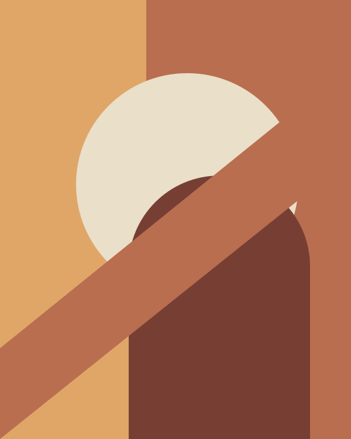

01 / Earth & form
Mira Arden
Mira's imagined practice begins with the landscape: a hill, a warm afternoon, a simple horizon. Earthy colors and bold shapes turn familiar scenes into something quieter.
- Palette: terracotta, olive, and cream
- Focus: landscapes and geometric abstraction